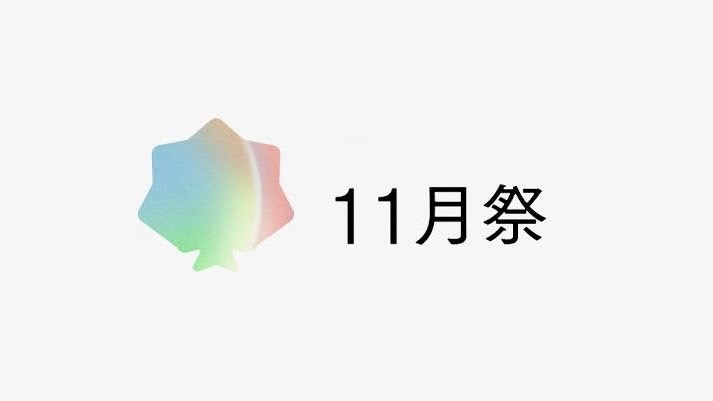
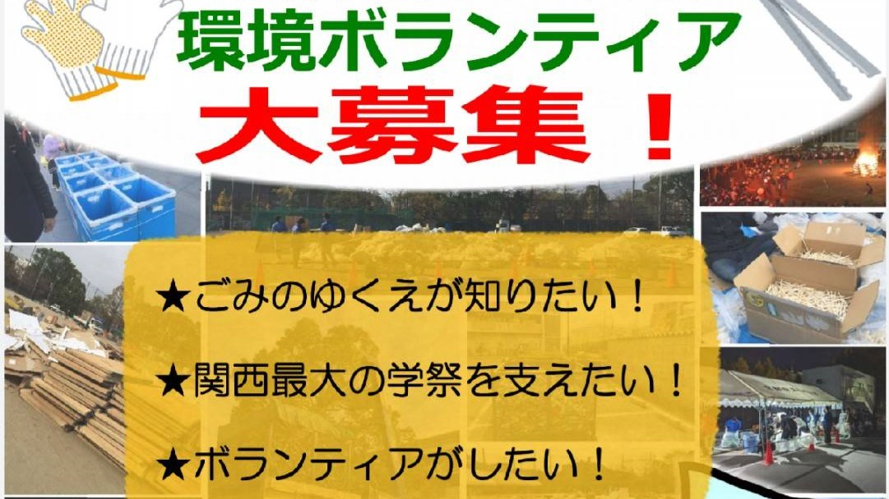
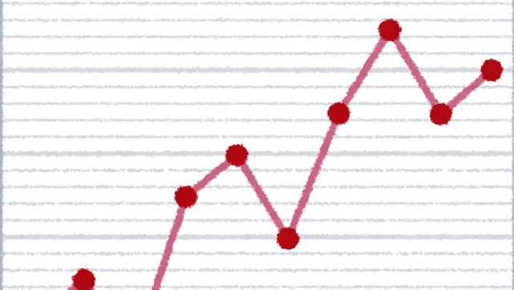

関西最大級の学園祭とも言われる京都大学11月祭。 その反面、ごみの排出量も多く、数トンものごみが排出されています。 11月祭環境対策委員会は11月祭における環境負荷の低減ならびに、企画者・来場者への環境意識の啓発を目的に活動しています。
我々の活動を紹介します！
前夜祭にて模擬店出店予定の方は必ずご覧ください。
11月祭本祭にて模擬店出店予定の方は必ずご覧ください。
高校生、学部生、院生のボランティアさんを募集！
質問受付中。
過去の模擬店データ集を掲載します。環境負荷低減にご協力をお願いいたします。